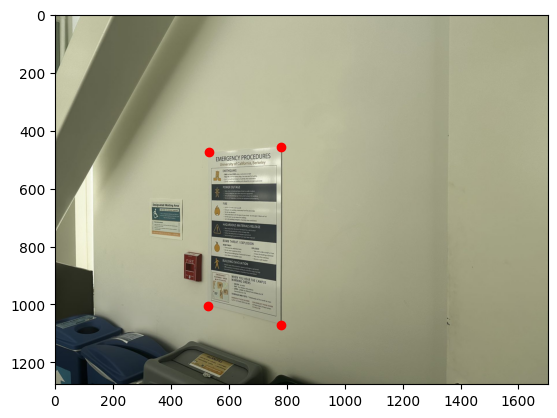

We know that to do projective warping, we need to get the homography matrix H where Hp = p' and
\[
H =
\begin{bmatrix}
a & b & c \\
d & e & f \\
g & h & 1
\end{bmatrix}
\]
H denotes the transformation
\[
p =
\begin{bmatrix}
x \\
y \\
1
\end{bmatrix}
\]
p denotes a point in the base image
\[
p' =
\begin{bmatrix}
wx' \\
wy' \\
w
\end{bmatrix}
\]
p' denotes a point in the warped image
\[
w =
\begin{bmatrix}
g & h & 1
\end{bmatrix}
\times
\begin{bmatrix}
x \\
y \\
1
\end{bmatrix}
\]
w is calculated as this
Substitude w in the above formula and expanding it, we found that coefficients in H could be expressed as
\[
\begin{bmatrix}
x & y & 1 & 0 & 0 & 0 & -xx' & -yx' \\
0 & 0 & 0 & x & y & 1 & -xy' & -yy'
\end{bmatrix}
\begin{bmatrix}
a \\
b \\
c \\
d \\
e \\
f \\
g \\
h \\
\end{bmatrix}
=
\begin{bmatrix}
x' \\
y'
\end{bmatrix}
\]
substitude each p & p' pairs and stack them in form of
\[
\begin{bmatrix}
x_1 & y_1 & 1 & 0 & 0 & 0 & -xx' & -yx' \\
0 & 0 & 0 & x_1 & y_1 & 1 & -xy' & -yy' \\
x_2 & y_2 & 1 & 0 & 0 & 0 & -xx' & -yx' \\
0 & 0 & 0 & x_2 & y_2 & 1 & -xy' & -yy' \\
e & t & c & e & t & c & . & .
\end{bmatrix}
\begin{bmatrix}
a \\
b \\
c \\
d \\
e \\
f \\
g \\
h \\
\end{bmatrix}
=
\begin{bmatrix}
x'_1 \\
y'_1 \\
x'_2 \\
y'_2 \\
. \\
.
\end{bmatrix}
\]
We could solve for coefficients of H using least square where
\[
x = (A^{t}A)^{-1} A^{t}b
\]
where
\[
x =
\begin{bmatrix}
a \\
b \\
c \\
d \\
e \\
f \\
g \\
h \\
\end{bmatrix}
\]
First thing to do in warping is to calculate the transformation matrix H, which needs correspondence points p p' pairs to do:
Below are the correspondence I annotated
The second step to do warping is to calculate the coordinate of warped image, where I do by first apply the calculated H to the four corners of the original
rectangular image to find the polygon shape where the warp is going to take form. Then, I use inverse warping: I loop over each of the points in the final polygon
and calculate \p = wH^{-1}p'\ as the point on the original image to do interpolation for color and feed the color back into the final polygon.
Below are the warped image of wurster hall, fountain and EECS hall:
Warped high perspective of WursterWarped high perspective of fountainWarped right perspective of EECS Hall
4. Rectify Images
After implementing the warping function, we could rectify an image: simply annotate a known rectangle in an image and warp it toward a
set of 4 points which compose a rectangle. The set of 4 points are chosen by hand, but their value should be adjusted to preserve original resolution.
Below are the annotated images and their rectifications, the original image could be found in section 'Shoot the Pictures' above

Annotated posterRectified poster
Annotated campanileRectified campanile
5. Blending into Mosaic
After obtaining the warped image, there are two more steps before we could morph warped and original into a mosaic,
the two steps are alignment and blending.
I. Alignment
To do alignment between the original and the warped image. I obtain a mean point by average between the
annotated points in base image and transformed annotated point in the warped image. Then I stack the mean point and calculate
the width and height of the final mosaic image by finding the maximum offset between mean point and each of the 4 boundries of original and warped.
Below is the example of alignment on Wurster hall images, the green point denotes the mean point, the gray part is occupied by one of the images, black occupied
by none and white is the intersection.
Meaning point of originalTransformed Meaning point of warpedMosaic Dimension Demonstration
II. Blending
To do blending, I implemented an alpha mask on the obtained interection in the alignment process.
Below is the vertical alpha mask used on Wurster/fountain images, and the horizontal alpha mask used on the EECS images.
Vertical Alpha Mask
Horizontal Alpha Mask
6. The Mosaic
After doing alignment and blending, we could finally create mosaics, below are the mosaics of wurster, fountain and EECS hall, inaccompany of the original images.
Original 1Original 2Mosaic
Original 1Original 2Mosaic
Original 1Original 2Mosaic
Conclusion for 4A
This is a very interesting project, it enables me to transform an image to achieve a semi-change of perspective, which I used to thought was impossible
since it would be including extra information. It is amazing and satisfying to know that there are tricks we could do to trick our eyes, like projecting original information on a new projection plane.
4B: Feature Matching for Autostitching
1. Detecting corner features in an image
To find the corners in an image, I took Harris' Corner Detector approach.
I used the provided function get_harris_corners() in harris.py to do so, below is the visual result of
this function on the wurster hall picture, where h value correspond to the 'corner-ness' of a pixel:
The h value for every pixel Each detected 'Corner', with an h value > 0
It could be seen that they are spatially even across the image, but they are too dense which would lead to very expensive (and unnecessary) computations.
Therefore, I need to filter them while keeping them spatially even, I used Adaptive Non-maximal Suppression method mentioned in the Brown et al. paper.
Since we need to calculate the distance between each point to each point, it is computationally expensive to do,
but since my picture is small (800x600), where the harris corner is around ~10000 for each picture, using the provided dist2() function is sufficient.
Corners after ANMS
We could see that ANMS preserves spatially evenness while reducing the density of corners,
saving a lot of computation for future homography.
2. Extracting a Feature Descriptor for each feature point
After we got a decent amount of corners in our target image, we need to extract
a feature descriptor for each point so that we could compare similarity between two points.
For each target point, I sample a 8x8 patch from the 40x40 pixels around the target point to get a blurred descriptor.
Then I normalize the descriptors, following the steps described in the paper.
Below are some examples of features, sampled patch and normalized patch:
Feature 18Feature 40Feature 2
3. Matching these feature descriptors between two images
After collecting feature for each target points, we need to do matching between the features of two images.
I need to find features that look similar to identify if they are a good match and could be used to calculate a homography.
We know that for each point (that has a match), there is only one correct match, which suggests that if the error ratio between one point's closest match and second closest match is close to 1,
this match is probably fake. Using this Lowe's trick, I set the threshold ratio to be 0.4, if the error of a point's best match is more than 0.4 of the point's second best match,
we just identify this point as no match and discard it. Below is the matching result using Lowe's trick for all 3 mosaics:
Lowe Filtered Matches for WursterLowe Filtered Matches for Fountain
Lowe Filtered Matches for EECS
4. Use a robust method (RANSAC) to compute a homograph
We could see that while most of the point pairs appear to be valid, there are some mismatches.
Since we are computing homogrphy with least squares, several outliers could sabotage our projective matrix.
Hence, we need to use RANSAC to select a sub-set of consensus point matches to calculate our homography, and reject the outliers.
To do so, we select four feature pairs (minimum for a homography), calculate a homography, and count the inliers where Hp is very close to p'.
We do this steps for a preset amount of times, find the group with the most inliers and compute a homogrphy according to only them.
Below is the result after applying RANSAC.
RANSAC Matches for WursterRANSAC Filtered Matches for Fountain
RANSAC Filtered Matches for EECS
We could observe that while the number of pairs is reduced, all of them appear to be valid.
RANSAC is working well.
5. Use the auto detected point to produce a mosaic
Below is the result comparison between hand-annotated and auto-stitching.
Hand annotated result for WursterAuto-stitching result for Wurster
Hand annotated result for FountainAuto-stitching result for Fountain
Hand annotated result for EECSAuto-stitching result for EECS
We could see that the auto-stitching result is equally good and even better (like the fountain example) than hand-annotated result.
This proves that the algorithm for auto-stitching, while old, is still very effective and amazing.
Conclusion for 4B
This project is very amazing, the ANMS and RANSAC algorithm are new for me and I think this way of solving the problem could be
used in other fields. Also, this project provides me a bit of insight of some of the comtemporary visual neural networks,
while much more advanced, they are still doing the same thing as a algorithm that could do 20 years ago: detecting edges.


![Offset: r[90,22], g[40,16]](./fountaindown_pts.png)

![Offset: r[90,22], g[40,16]](./align_example.png)
![Offset: r[90,22], g[40,16]](./align_example1.png)
![Offset: r[90,22], g[40,16]](./alignment_sample.png)
![Offset: r[90,22], g[40,16]](./vertical_mask2.png)
![Offset: r[90,22], g[40,16]](./horizontal_mask2.png)
![Offset: r[90,22], g[40,16]](./trans_wurster.png)
![Offset: r[90,22], g[40,16]](./trans_fountain.png)
![Offset: r[90,22], g[40,16]](./trans_EECS.png)